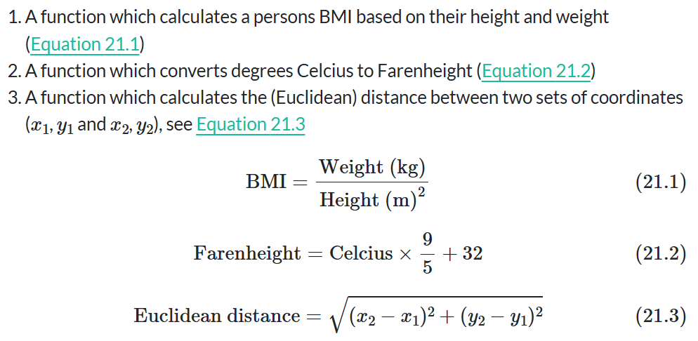
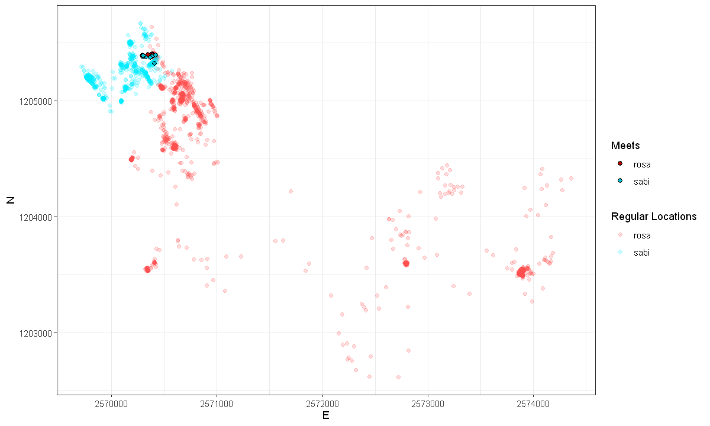

Code
testfun <- function() {}Up to now, we have used a variety of different functions designed by other developers. Sometimes we need to execute an operation multiple times, and most often it is reasonable to write a function to do so. Whenever you have copied and pasted a block of code more than twice, you should consider writing a function (Wickham et al. 2023).
The first step in writing a function, is picking a name and assigning <- function(){} to it.
testfun <- function() {}To run the function, we have to call the assigned name with the brackets. The function testfun gives no output, which is why we get NULL back.
testfun()NULLclass(testfun)To make the function actually do something, we need to specify what should be done within the curly brackets {}. The following function always prints the same statement and accepts no input values:
testfun <- function() {
print("this function does nothing")
}
testfun()[1] "this function does nothing"If we want the function to accept some input values, we have to define them within the round brackets. For example, I specify a variable named sometext and can call this variable within the execution.
testfun <- function(sometext) {
print(sometext)
}
testfun(sometext = "this function does slightly more, but still not much")[1] "this function does slightly more, but still not much"Let’s take a more practical example. Say we want a function that calculates our age if provided with the date of our birthday. We can use Sys.time() to provide today’s date and difftime() to calculate the time difference between today and our birthday.
my_age <- function(birthday, output_unit) {
today <- difftime(Sys.time(),
birthday, units = output_unit)
}
my_age(birthday = "1997-04-23", output_unit = "days")As we already know from using other functions, if we declare our variables in the order that we initially listed them, we do not need to specify the parameters (no need of birthday = and output_unit =).
my_age("1997-04-23", "days")Time difference of 10612.44 daysIf we want any of our parameters to have default value, we can assign an initial value to the parameter when declaring the variables within the round brackets.
my_age <- function(birthday, output_unit = "days") {
difftime(Sys.time(), birthday, units = output_unit)
}
# if not stated otherwise, our function uses the unit "days"
my_age("1997-04-23")Time difference of 10612.45 days# We can still overwrite units
my_age("1997-04-23", "hours")Time difference of 254698.5 hoursAll you need to do now is run execute the function deceleration (myage <- function... etc.) at the beginning of your script, and you can use the function for your entire R session.
Important: Always try to make your function self sufficient: Only use objects within your function that are either passed as function arguments or created within the funtion. See more on this topic here, in the online version of the book by Rodrigues (2023).
Create the following two functions:
library(IRdisplay)
display_png(file = "Data/formeln.png", width = 600)
bmi <- function(weight, height){
weight / height^2}
bmi(60, 1.72)farenheight <- function(celcius){
(celcius * 9 / 5) + 32}
farenheight(30)euclidean_distance <- function(x1, x2, y1, y2){
sqrt((x2-x1)^2 + (y2-y1)^2)
}
euclidean_distance(12, 15, 23, 20)In the next tasks we will look for “meet” patterns in our wild boar data. To simplify this, we will only use a subset of our wild boar data: The individuals Rosa and Sabi for the timespan 01.04.2015 - 15.04.2015. Use the dataset wildschwein_BE_2056.csv (on moodle). Import the csv as a data.frame and filter it with the aforementioned criteria. You do not need to convert the data.frame to an sf object.
library(tidyverse)data <- read_delim("Data/wildschwein_BE_2056.csv") %>%
filter(TierName == "Rosa" | TierName == "Sabi",
date(DatetimeUTC) >= "2015-04-01" & date(DatetimeUTC) <= "2015-04-15")
head(data)
unique(data$TierName)
min(data$DatetimeUTC)
max(data$DatetimeUTC)| TierID | TierName | CollarID | DatetimeUTC | E | N |
|---|---|---|---|---|---|
| <chr> | <chr> | <dbl> | <dttm> | <dbl> | <dbl> |
| 002A | Sabi | 12275 | 2015-04-01 00:00:11 | 2570372 | 1205313 |
| 002A | Sabi | 12275 | 2015-04-01 00:15:22 | 2570309 | 1205262 |
| 002A | Sabi | 12275 | 2015-04-01 00:30:11 | 2570326 | 1205248 |
| 002A | Sabi | 12275 | 2015-04-01 00:45:16 | 2570315 | 1205242 |
| 002A | Sabi | 12275 | 2015-04-01 01:00:44 | 2570323 | 1205237 |
| 002A | Sabi | 12275 | 2015-04-01 01:15:17 | 2570320 | 1205247 |
[1] "2015-04-01 00:00:10 UTC"[1] "2015-04-15 23:47:56 UTC"Have a look at your dataset. You will notice that samples are taken at every full hour, quarter past, half past and quarter to. The sampling time is usually off by a couple of seconds.
To compare Rosa and Sabi’s locations, we first need to match the two animals temporally. For that we can use a join, but need identical time stamps to serve as a join key. We therefore need to slightly adjust our time stamps to a common, concurrent interval.
The task is therfore to round the minutes of DatetimeUTC to a multiple of 15 (00, 15, 30,45) and store the values in a new column1. You can use the lubridate function round_date() for this. See the examples here to see how this goes.
data$column1 <- round_date(data$DatetimeUTC, "15 mins")head(data)| TierID | TierName | CollarID | DatetimeUTC | E | N | column1 |
|---|---|---|---|---|---|---|
| <chr> | <chr> | <dbl> | <dttm> | <dbl> | <dbl> | <dttm> |
| 002A | Sabi | 12275 | 2015-04-01 00:00:11 | 2570372 | 1205313 | 2015-04-01 00:00:00 |
| 002A | Sabi | 12275 | 2015-04-01 00:15:22 | 2570309 | 1205262 | 2015-04-01 00:15:00 |
| 002A | Sabi | 12275 | 2015-04-01 00:30:11 | 2570326 | 1205248 | 2015-04-01 00:30:00 |
| 002A | Sabi | 12275 | 2015-04-01 00:45:16 | 2570315 | 1205242 | 2015-04-01 00:45:00 |
| 002A | Sabi | 12275 | 2015-04-01 01:00:44 | 2570323 | 1205237 | 2015-04-01 01:00:00 |
| 002A | Sabi | 12275 | 2015-04-01 01:15:17 | 2570320 | 1205247 | 2015-04-01 01:15:00 |
To measure the distance between concurrent locations, we need to follow the following steps.
wildschwein_filter object into one data.frame per animalrosa <- data %>% filter(TierName == "Rosa")
sabi <- data %>% filter(TierName == "Sabi")head(rosa)| TierID | TierName | CollarID | DatetimeUTC | E | N | column1 |
|---|---|---|---|---|---|---|
| <chr> | <chr> | <dbl> | <dttm> | <dbl> | <dbl> | <dttm> |
| 016A | Rosa | 13972 | 2015-04-01 00:00:10 | 2570823 | 1204800 | 2015-04-01 00:00:00 |
| 016A | Rosa | 13972 | 2015-04-01 00:15:14 | 2570831 | 1204794 | 2015-04-01 00:15:00 |
| 016A | Rosa | 13972 | 2015-04-01 00:30:11 | 2570842 | 1204796 | 2015-04-01 00:30:00 |
| 016A | Rosa | 13972 | 2015-04-01 00:45:17 | 2570820 | 1204803 | 2015-04-01 00:45:00 |
| 016A | Rosa | 13972 | 2015-04-01 01:00:44 | 2570829 | 1204787 | 2015-04-01 01:00:00 |
| 016A | Rosa | 13972 | 2015-04-01 01:15:06 | 2570831 | 1204767 | 2015-04-01 01:15:00 |
data_joined <- full_join(rosa, sabi, by = "column1", suffix = c(".rosa", ".sabi"))
head(data_joined)| TierID.rosa | TierName.rosa | CollarID.rosa | DatetimeUTC.rosa | E.rosa | N.rosa | column1 | TierID.sabi | TierName.sabi | CollarID.sabi | DatetimeUTC.sabi | E.sabi | N.sabi |
|---|---|---|---|---|---|---|---|---|---|---|---|---|
| <chr> | <chr> | <dbl> | <dttm> | <dbl> | <dbl> | <dttm> | <chr> | <chr> | <dbl> | <dttm> | <dbl> | <dbl> |
| 016A | Rosa | 13972 | 2015-04-01 00:00:10 | 2570823 | 1204800 | 2015-04-01 00:00:00 | 002A | Sabi | 12275 | 2015-04-01 00:00:11 | 2570372 | 1205313 |
| 016A | Rosa | 13972 | 2015-04-01 00:15:14 | 2570831 | 1204794 | 2015-04-01 00:15:00 | 002A | Sabi | 12275 | 2015-04-01 00:15:22 | 2570309 | 1205262 |
| 016A | Rosa | 13972 | 2015-04-01 00:30:11 | 2570842 | 1204796 | 2015-04-01 00:30:00 | 002A | Sabi | 12275 | 2015-04-01 00:30:11 | 2570326 | 1205248 |
| 016A | Rosa | 13972 | 2015-04-01 00:45:17 | 2570820 | 1204803 | 2015-04-01 00:45:00 | 002A | Sabi | 12275 | 2015-04-01 00:45:16 | 2570315 | 1205242 |
| 016A | Rosa | 13972 | 2015-04-01 01:00:44 | 2570829 | 1204787 | 2015-04-01 01:00:00 | 002A | Sabi | 12275 | 2015-04-01 01:00:44 | 2570323 | 1205237 |
| 016A | Rosa | 13972 | 2015-04-01 01:15:06 | 2570831 | 1204767 | 2015-04-01 01:15:00 | 002A | Sabi | 12275 | 2015-04-01 01:15:17 | 2570320 | 1205247 |
In the joined dataset, calculate Euclidean distances between concurrent observations and store the values in a new column
–> ich habe ja eine Funktion euclidean_distance erstellt!!
data_euc_dist <- mutate(data_joined,
Euclidean_distance = euclidean_distance(E.rosa, E.sabi, N.rosa, N.sabi))
head(data_euc_dist)| TierID.rosa | TierName.rosa | CollarID.rosa | DatetimeUTC.rosa | E.rosa | N.rosa | column1 | TierID.sabi | TierName.sabi | CollarID.sabi | DatetimeUTC.sabi | E.sabi | N.sabi | Euclidean_distance |
|---|---|---|---|---|---|---|---|---|---|---|---|---|---|
| <chr> | <chr> | <dbl> | <dttm> | <dbl> | <dbl> | <dttm> | <chr> | <chr> | <dbl> | <dttm> | <dbl> | <dbl> | <dbl> |
| 016A | Rosa | 13972 | 2015-04-01 00:00:10 | 2570823 | 1204800 | 2015-04-01 00:00:00 | 002A | Sabi | 12275 | 2015-04-01 00:00:11 | 2570372 | 1205313 | 682.8943 |
| 016A | Rosa | 13972 | 2015-04-01 00:15:14 | 2570831 | 1204794 | 2015-04-01 00:15:00 | 002A | Sabi | 12275 | 2015-04-01 00:15:22 | 2570309 | 1205262 | 700.9568 |
| 016A | Rosa | 13972 | 2015-04-01 00:30:11 | 2570842 | 1204796 | 2015-04-01 00:30:00 | 002A | Sabi | 12275 | 2015-04-01 00:30:11 | 2570326 | 1205248 | 685.8371 |
| 016A | Rosa | 13972 | 2015-04-01 00:45:17 | 2570820 | 1204803 | 2015-04-01 00:45:00 | 002A | Sabi | 12275 | 2015-04-01 00:45:16 | 2570315 | 1205242 | 669.1526 |
| 016A | Rosa | 13972 | 2015-04-01 01:00:44 | 2570829 | 1204787 | 2015-04-01 01:00:00 | 002A | Sabi | 12275 | 2015-04-01 01:00:44 | 2570323 | 1205237 | 676.5464 |
| 016A | Rosa | 13972 | 2015-04-01 01:15:06 | 2570831 | 1204767 | 2015-04-01 01:15:00 | 002A | Sabi | 12275 | 2015-04-01 01:15:17 | 2570320 | 1205247 | 701.6919 |
Use a reasonable threshold on distance to determine if the animals are also spatially close enough to constitute a meet (we use 100 meters). Store this Boolean information (TRUE/FALSE) in a new column
data_euc_dist <- data_euc_dist %>% mutate(
meet = Euclidean_distance <= 100)head(data_euc_dist)| TierID.rosa | TierName.rosa | CollarID.rosa | DatetimeUTC.rosa | E.rosa | N.rosa | column1 | TierID.sabi | TierName.sabi | CollarID.sabi | DatetimeUTC.sabi | E.sabi | N.sabi | Euclidean_distance | meet |
|---|---|---|---|---|---|---|---|---|---|---|---|---|---|---|
| <chr> | <chr> | <dbl> | <dttm> | <dbl> | <dbl> | <dttm> | <chr> | <chr> | <dbl> | <dttm> | <dbl> | <dbl> | <dbl> | <lgl> |
| 016A | Rosa | 13972 | 2015-04-01 00:00:10 | 2570823 | 1204800 | 2015-04-01 00:00:00 | 002A | Sabi | 12275 | 2015-04-01 00:00:11 | 2570372 | 1205313 | 682.8943 | FALSE |
| 016A | Rosa | 13972 | 2015-04-01 00:15:14 | 2570831 | 1204794 | 2015-04-01 00:15:00 | 002A | Sabi | 12275 | 2015-04-01 00:15:22 | 2570309 | 1205262 | 700.9568 | FALSE |
| 016A | Rosa | 13972 | 2015-04-01 00:30:11 | 2570842 | 1204796 | 2015-04-01 00:30:00 | 002A | Sabi | 12275 | 2015-04-01 00:30:11 | 2570326 | 1205248 | 685.8371 | FALSE |
| 016A | Rosa | 13972 | 2015-04-01 00:45:17 | 2570820 | 1204803 | 2015-04-01 00:45:00 | 002A | Sabi | 12275 | 2015-04-01 00:45:16 | 2570315 | 1205242 | 669.1526 | FALSE |
| 016A | Rosa | 13972 | 2015-04-01 01:00:44 | 2570829 | 1204787 | 2015-04-01 01:00:00 | 002A | Sabi | 12275 | 2015-04-01 01:00:44 | 2570323 | 1205237 | 676.5464 | FALSE |
| 016A | Rosa | 13972 | 2015-04-01 01:15:06 | 2570831 | 1204767 | 2015-04-01 01:15:00 | 002A | Sabi | 12275 | 2015-04-01 01:15:17 | 2570320 | 1205247 | 701.6919 | FALSE |
data_meets <- data_euc_dist %>%
filter(meet == TRUE)head(data_meets)| TierID.rosa | TierName.rosa | CollarID.rosa | DatetimeUTC.rosa | E.rosa | N.rosa | column1 | TierID.sabi | TierName.sabi | CollarID.sabi | DatetimeUTC.sabi | E.sabi | N.sabi | Euclidean_distance | meet |
|---|---|---|---|---|---|---|---|---|---|---|---|---|---|---|
| <chr> | <chr> | <dbl> | <dttm> | <dbl> | <dbl> | <dttm> | <chr> | <chr> | <dbl> | <dttm> | <dbl> | <dbl> | <dbl> | <lgl> |
| 016A | Rosa | 13972 | 2015-04-02 04:45:15 | 2570399 | 1205393 | 2015-04-02 04:45:00 | 002A | Sabi | 12275 | 2015-04-02 04:45:16 | 2570422 | 1205393 | 23.56397 | TRUE |
| 016A | Rosa | 13972 | 2015-04-02 05:00:12 | 2570395 | 1205393 | 2015-04-02 05:00:00 | 002A | Sabi | 12275 | 2015-04-02 05:00:11 | 2570387 | 1205381 | 14.16954 | TRUE |
| 016A | Rosa | 13972 | 2015-04-02 18:00:17 | 2570396 | 1205388 | 2015-04-02 18:00:00 | 002A | Sabi | 12275 | 2015-04-02 18:00:15 | 2570368 | 1205370 | 33.20166 | TRUE |
| 016A | Rosa | 13972 | 2015-04-02 18:30:13 | 2570350 | 1205396 | 2015-04-02 18:30:00 | 002A | Sabi | 12275 | 2015-04-02 18:30:23 | 2570409 | 1205318 | 97.62235 | TRUE |
| 016A | Rosa | 13972 | 2015-04-03 04:00:15 | 2570394 | 1205391 | 2015-04-03 04:00:00 | 002A | Sabi | 12275 | 2015-04-03 04:00:13 | 2570298 | 1205391 | 95.87161 | TRUE |
| 016A | Rosa | 13972 | 2015-04-03 04:15:10 | 2570395 | 1205397 | 2015-04-03 04:15:00 | 002A | Sabi | 12275 | 2015-04-03 04:15:09 | 2570302 | 1205386 | 93.38390 | TRUE |
Now, visualize the meets spatially in a way that you think reasonable. For example in the plot as shows below. To produce this plot we:
# Plotgrösse festlegen
options(repr.plot.width = 10, repr.plot.height = 6)
ggplot() +
# Regular locations
geom_point(data = data_euc_dist, aes(x = E.rosa, y = N.rosa, color = "rosa"), alpha = 0.2) +
geom_point(data = data_euc_dist, aes(x = E.sabi, y = N.sabi, color = "sabi"), alpha = 0.2) +
# Meets
geom_point(data = data_meets, aes(x = E.rosa, y = N.rosa, fill = "rosa"),
shape = 21, color = "black", size = 2) +
geom_point(data = data_meets, aes(x = E.sabi, y = N.sabi, fill = "sabi"),
shape = 21, color = "black", size = 2) +
# Farben definieren
scale_color_manual(
name = "Regular Locations",
values = c("rosa" = "#ff4d4d", "sabi" = "#00eaff")) +
scale_fill_manual(
name = "Meets",
values = c("rosa" = "#b30000", "sabi" = "#00bbcc")) +
# Achsenbeschriftung
labs(
x = "E",
y = "N") +
theme_bw() +
theme(legend.position = "right")